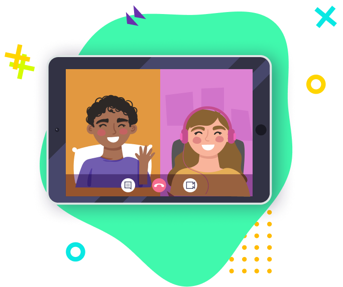

<section class="teachers">
	<div class="teachers__wrapper wrapper">
		<h2 class="teachers__title title">
			Викладачі та методика викладання в YOUSTUD
		</h2>
		<div class="teachers__container">
			<div class="teachers__img">
				
			</div>
			<div class="teachers__text">
				<!-- Ви знаєте такий термін, як "покоління Z"? Саме теперішні школяри
				і є поколінням Z. Вони відрізняються від минулих поколінь - їм
				не можна сказати що "так треба", на них буває не діють аргументи
				про кар'єру чи майбутнє, але вони здатні досягати неймовірних
				результатів, коли їм цікаво.
				<br />
				<br /> -->
				Саме на цьому будується методика викладання в нашій
				онлайн-школі. Ви не побачите стандартних методів викладання,
				нудних лекцій та сухої практики. Наші викладачі віком
				<span>19-25</span> рік , які <span>поважають</span> думку учнів,
				<span>відповідають</span> на всі питання і
				<span>спілкуються</span> з ними однією мовою. Всі навчальні
				програми розроблені викладачами і затвердженні викладачами з
				<span>досвідом</span> понад <span>10 років.</span>
			</div>
		</div>
	</div>
</section>
